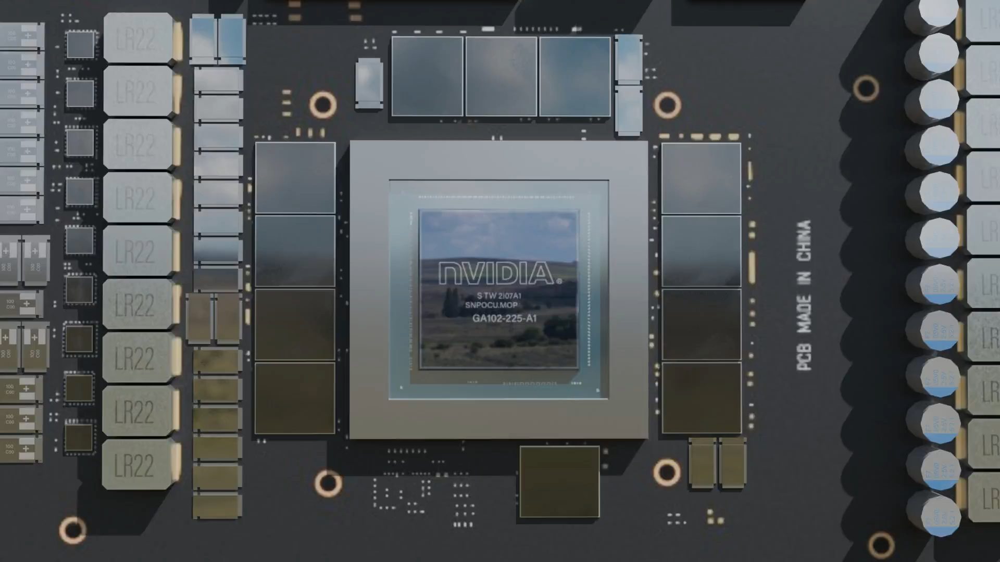

Inteligencia Artificial
¡Ya has oído hablar de ella!
Inteligencia Artificial (IA) es un campo revolucionario de la informática que permite a las máquinas realizar tareas que requieren una inteligencia similar a la humana.
Ejemplos de ello son: aprendizaje, razonamiento, y toma de decisiones. Gracias al uso de algoritmos avanzados y grandes conjuntos de datos, los sistemas de IA pueden identificar patrones, hacer predicciones, y mejorar con el tiempo mediante aprendizaje automático y aprendizaje profundo. Una de las razones del éxito de la IA radica en su hardware especializado, en particular los chips de vanguardia de NVIDIA. Originalmente diseñados para el renderizado gráfico, las GPU de NVIDIA han evolucionado en potentes aceleradores de IA, con innovaciones como la tecnología Tensor Core que rompen sus límites en diversos campos. Estos chips impulsan aplicaciones que van desde la visión por computadora hasta el procesamiento de lenguaje natural, permitiendo avances en autos autónomos, asistentes virtuales, y más. La integración perfecta de software y hardware sigue expandiendo las capacidades de la IA, convirtiéndola en una parte integral de la vida diaria. A medida que la tecnología avanza, las chips de IA de NVIDIA y otras herramientas informáticas de alto rendimiento seguirán siendo cruciales para desbloquear todo el potencial de la IA y mejorarla aún más.

Mencionamos las GPU de NVIDIA anteriormente, profundicemos en lo que realmente son.
Un GPU, abreviatura de Unidad de Procesamiento Gráfico, es un procesador especializado diseñado para manejar cálculos gráficos complejos y tareas de renderizado. A diferencia de las CPUs, las GPU sobresalen en la realización de operaciones en paralelo, lo que las hace ideales para procesar grandes conjuntos de datos simultáneamente. Se utilizan ampliamente en videojuegos, edición de video, y aplicaciones de IA debido a su capacidad para acelerar tareas como el renderizado de imágenes y el aprendizaje automático. Como se mencionó anteriormente, las GPU son esenciales para el procesamiento de la IA ya que proporcionan velocidades extremas para procesar grandes cantidades de datos.
Echemos un vistazo al interior de una de las GPU de NVIDIA, RTX 3080.
Alternar animaciones 3D
Esta es la RTX 3080 MSI

Estos son los ventiladores de enfriamiento, responsables de enfriar la GPU expulsando el aire caliente, ya que la GPU genera calor durante su uso y, dependiendo de la carga, puede calentarse muy rápidamente.

Este es el disipador de calor, que generalmente está hecho de aluminio; su función es transferir el calor de las placas en la parte posterior que tocan los 'puntos calientes'. Luego, este calor se transfiere a través de las placas y es expulsado por los ventiladores.

Por último, el 'die'. El 'die' es el chip que proporciona la base para que todo lo demás funcione. A su alrededor se encuentran módulos de VRAM, que almacenan memoria para que el 'die' pueda acceder rápidamente a los datos que necesita.
Esta es la RTX 3080 MSI.
La evolución de la Inteligencia Artificial
El nacimiento de la IA (1956)
En 1956, la Conferencia de Dartmouth marcó el inicio formal de la IA como campo de estudio. Los investigadores imaginaron crear máquinas que pudieran 'pensar' como los humanos. Los primeros experimentos incluyeron el razonamiento simbólico y la resolución de problemas. Este momento fundacional sentó las bases para décadas de innovación. El camino de la IA había comenzado oficialmente.

Frank Rosenblatt frente a su perceptrón.
El auge de los sistemas expertos (años 1970)
Los sistemas expertos, que imitaban la toma de decisiones humanas, ganaron tracción. Las industrias utilizaron la IA para resolver problemas complejos, como diagnósticos médicos y logística. Programas como MYCIN y XCON demostraron el potencial de la IA para aplicaciones en el mundo real. Esta época demostró la capacidad de la IA para asistir, y no reemplazar, la experiencia humana. Las empresas comenzaron a adoptar la IA para mejorar la eficiencia y la precisión.

Edward Feigenbaum (sentado), director del Centro de Cómputo, con miembros de la Junta Directiva del Centro de Cómputo.
El invierno de la IA (años 1970-1990)
La financiación y el interés en la IA disminuyeron a medida que los avances se ralentizaban. Expectativas poco realistas llevaron a la decepción y al escepticismo. Los investigadores se enfrentaron a limitaciones tecnológicas y carecían de suficiente potencia de cálculo. A pesar de los contratiempos, un pequeño grupo continuó con la investigación fundamental en la sombra. Este período destacó la importancia de la resiliencia y de objetivos realistas.

Briefing para el vicepresidente de EE. UU. Gerald Ford en 1973 sobre el modelo de traducción informática basado en la gramática de intersección.
La revolución del Big Data y el aprendizaje profundo (años 2010)
La explosión del big data y de los GPU transformó las capacidades de la IA. Las redes neuronales evolucionaron hacia modelos poderosos de aprendizaje profundo. Innovaciones como el reconocimiento de imágenes (por ejemplo, ImageNet) sorprendieron al mundo. Herramientas impulsadas por la IA, como Siri, Alexa y Google Translate, se convirtieron en nombres conocidos. El aprendizaje automático revolucionó industrias, desde la salud hasta los autos autónomos.

Chipset IA H100 de NVIDIA.
La IA generativa y el futuro (años 2020)
Modelos de IA generativa como GPT y DALL·E abrieron nuevas fronteras. Las máquinas ahora podían crear arte realista, música y textos de tipo humano. La creatividad potenciadas por la IA transformó campos como el entretenimiento y el diseño. Surgieron preocupaciones éticas respecto a los sesgos, la desinformación y el desplazamiento laboral. El futuro de la IA es ilimitado, pero requiere una gestión cuidadosa.

ChatGPT.
El presente: la IA en la vida cotidiana
La IA está ahora profundamente integrada en nuestra vida diaria, transformando industrias desde la salud hasta el entretenimiento. Avances como DeepSeek, un modelo avanzado de IA, están impulsando innovaciones en el análisis de datos y el reconocimiento de patrones. DeepSeek se utiliza en campos como las finanzas, la salud y las industrias creativas, mejorando la toma de decisiones. A medida que la IA sigue evolucionando, el enfoque en la ética, la seguridad y la transparencia se intensifica. Con los continuos avances en hardware y software, la revolución de la IA se está acelerando, convirtiéndose en una parte central del futuro tecnológico.

DeepSeek.
En conclusión:
La Inteligencia Artificial ha recorrido un largo camino, y su viaje está lejos de terminar.
A medida que seguimos explorando nuevas fronteras, las posibilidades son ilimitadas.
Gracias por acompañarnos en esta aventura reveladora.